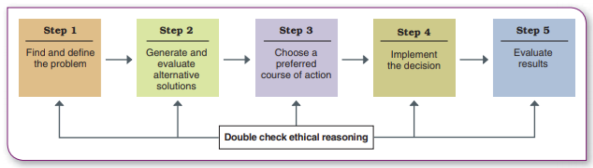
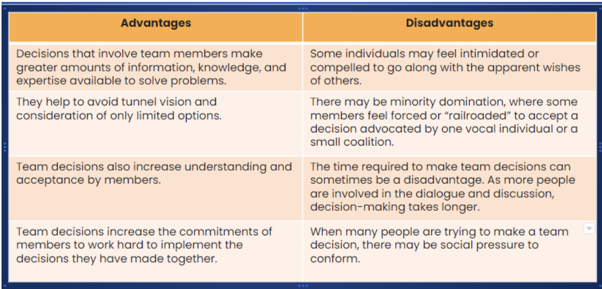

1
Timely
Use recent evening data, not last year’s holiday rush.
The first idea is not always the right problem. Managers need useful information, several options, and a way to see if the chosen fix worked.
Unit 1.8 lists five criteria for useful information. The checkout report should pass each one before the owner treats it as evidence.
Use recent evening data, not last year’s holiday rush.
Check whether cancelled transactions or system errors distorted the count.
Include waits, sales, staffing costs, and mistakes rather than sales alone.
Focus on the evening queue at this store, not citywide retail trends.
Label the chart by day and hour so staff can check the conclusion.
Technology helps with collection, not judgement. The point-of-sale system can show peak hours. A manager still needs to speak with cashiers and check whether the records explain the actual queue.
The Unit 1.9 reading defines a problem as the gap between an actual state and a desired one. Here, customers wait too long in the evening; the desired state is a shorter, reliable checkout.
Sees the line each night but does not collect information or act.
Checks the queue only after repeated complaints.
Tracks peak periods early and tests a change before customers leave.
A systematic manager checks wait-time records step by step. An experienced supervisor may also have an intuition about the cause. The stronger choice is to test that hunch against what happens on the floor.
Ask the right question: Is the delay at the till, at bagging, or caused by price checks? “Build another store” does not answer that yet.
Unit 1.10 sets out a five-step process. The last step matters: an announced decision is only a trial until its results are checked.
Confirm when the queue forms and what causes it.
Price another register, changed shifts, and a better bagging area.
Pick a four-week checkout trial with a clear waiting-time goal.
Train staff, explain the new line, and start at peak hours.
Compare waits, errors, costs, and feedback with the old process.

The Unit 1.9 reading also distinguishes programmed decisions, such as a familiar reorder rule, from non-programmed decisions, such as whether to open a second store. The latter needs more judgement and information.
The owner should hear from the shift supervisor, cashiers, and stock team. They see different causes of a slow queue.
| Advantages | Disadvantages |
|---|---|
| Staff bring information the owner may miss, such as frequent price checks. | Discussion takes time when a decision is urgent. |
| Different ideas can produce a cheaper fix than another location. | A loud voice or pressure to agree can hide a better idea. |
| People are more likely to support a plan they helped shape. | Conflicts about shifts can slow the group down. |
Ask each person to write one cause and one possible fix before the discussion. Set a short deadline, give someone permission to challenge the favourite idea, and record why the final option was chosen.
An ethical check belongs in the decision too. A faster line should not depend on unsafe staffing or unfair overtime.
